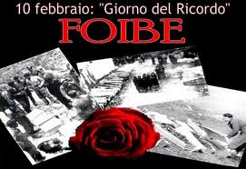
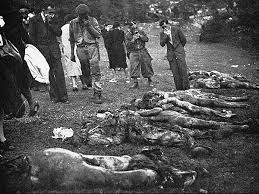
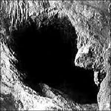

cosè successo il 10 febbraio?

un moto di odio e di furia sanguinaria, e un disegno annessionistico slavo, che prevalse innanzitutto nel Trattato di pace del 1947, e che assunse i sinistri contorni di una "pulizia etnica".
Il Giorno del ricordo è una solennità civile nazionale italiana, celebrata il 10 febbraio di ogni anno. Istituita con la legge 30 marzo 2004 n. 92 essa commemora le vittime dei massacri delle foibe e dell'esodo giuliano-dalmata.
Secondo la legge che l'ha istituito, al Giorno del ricordo è associato il rilascio di una targa commemorativa, destinata ai parenti degli "infoibati" e delle altre vittime delle persecuzioni, dei massacri e delle deportazioni
occorse in Istria, in Dalmazia o nelle province dell'attuale confine orientale durante l'ultima fase della seconda guerra mondiale e negli anni immediatamente successivi.
la deportazione

Con l'espressione massacri delle foibe, o spesso solo foibe, si intendono gli eccidi ai danni della popolazione italiana della Venezia Giulia e della Dalmazia, occorsi durante la seconda guerra mondiale e nell'immediato dopoguerra. Il nome deriva dai grandi
inghiottitoi carsici dove furono gettati i corpi delle vittime, che nella Venezia Giulia sono chiamati, appunto, "foibe".
Per estensione i termini "foibe" ed il neologismo "infoibare" sono diventati sinonimi di uccisioni che in realtà furono in massima parte perpetrate in modo diverso: la maggioranza delle vittime morì nei campi di prigionia jugoslavi o durante la deportazione verso di essi.
Il fenomeno dei massacri delle foibe è da inquadrare storicamente nell'ambito della secolare disputa fra italiani e popoli slavi per il possesso delle terre dell'Adriatico orientale, nelle lotte intestine fra i diversi popoli che vivevano in quell'area e nelle grandi ondate
epurative jugoslave del dopoguerra, che colpirono centinaia di migliaia di persone in un paese nel quale, con il crollo della dittatura fascista, andava imponendosi quella di stampo filo-sovietico, con mire sui territori di diversi paesi confinanti.
il genocidio
Costituiscono genocidio, secondo la definizione adottata dall'ONU, «gli atti commessi con l'intenzione di distruggere, in tutto o in parte, un gruppo nazionale, etnico, razziale o religioso». Anche la sottomissione intenzionale di un gruppo a condizioni di esistenza che ne comportino la scomparsa sia fisica sia culturale, totale o parziale, è di solito inclusa nella definizione di genocidio.
Il termine, derivante dalla greco γένος (ghénos razza, stirpe) e dal latino caedo , è entrato nell'uso comune ed ha iniziato ad essere considerato come un crimine specifico, recepito nel diritto internazionale e nel diritto interno di molti Paesi. Il genocidio è uno dei peggiori crimini che l'uomo possa commettere perché comporta la morte di migliaia, a volte milioni, di persone e la perdita di patrimoni culturali immensi. È pertanto definito dalla giurisprudenza un crimine contro l'umanità.
foibe
Foiba è il termine dialettale con cui, in Venezia Giulia, si indicano i grandi inghiottitoi (o caverne verticali, o pozzi), tipici della regione. Le foibe non sono quindi dei particolari tipi di caverne come viene spesso, erroneamente, affermato, ma solo il termine con cui vengono indicati, nella regione giuliana, gli inghiottitoi carsici, che in tale regione assumono spesso dimensioni spettacolari. Se ne contano circa 1700 in Istria.
Foiba è inoltre il nome del celebre inghiottitoio di Pisino e del torrente che in esso si getta.
Etimologia
Va precisato che "foiba" non è un vocabolo della lingua italiana, ma un termine dialettale utilizzato nell'area giuliana, che deriva dal latino fovea (fossa, cava)[4]. Il più antico documento su cui viene riportato è una relazione ufficiale nel 1770, scritta dal naturalista italiano Alberto Fortis, che scrisse una serie di libri sul carso della Dalmazia.
Il termine non si trova di conseguenza riportato nel fondamentale Dizionario della Lingua italiana di Niccolò Tommaseo. Non venne utilizzato nemmeno da Luigi Vittorio Bertarelli ed Eugenio Boegan, nella loro fondamentale opera sulle grotte del Carso.
Gli eccidi delle foibe
Schema di una foiba tratto da una pubblicazione del CLN (1946).
Exquisite-kfind.png Per approfondire, vedi Massacri delle foibe.
Il termine "foibe" è oggi comunemente associato agli eccidi commessi dai partigiani jugoslavi comunisti durante e subito dopo la seconda guerra mondiale. L'utilizzo del termine, secondo alcuni autori, è improprio: solo una minima parte delle vittime, infatti, fu occultata nelle foibe, mentre la maggior parte perse la vita in tutt'altro modo.
Ulteriore confusione ingenera il fatto che molte delle cosiddette "foibe" erano in realtà cave o miniere: la famosa "foiba di Basovizza", ad esempio, era in realtà il pozzo abbandonato di una miniera di carbone.
In anni recenti è invalso, saltuariamente, l'uso dei termini "foiba" ed "infoibare" anche per indicare esecuzioni sommarie svoltesi, nell'immediato dopoguerra, al di fuori della Venezia Giulia. Per quanto detto sopra, l'uso del termine in tale contesto, appare non corretto, sia da un punto di vista storico che etimologico.